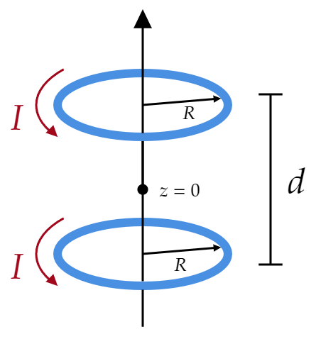

The magnetic field on the axis of a circular current loop (Eq. 5.41)
\begin{align*} B(z) &= \frac{\mu _0I}{4\pi } \left( \frac{\cos \theta }{\mathcal{R}^2 } \right) 2\pi R \\ &= \frac{\mu _0 I}{2}\frac{R^2 }{(R^2 +z^2 )^{3/2}}\tag{Eq. 5.41, as seen on example 5.6} \end{align*}is far from uniform (it falls off sharply with increasing $z $). You can produce a more nearly uniform field by using two such loops a distance $d $ apart (Fig. 5.62).
(a) Find the field ($B $) as a function of $z $, and show that $\frac{\partial B}{\partial z} $ is zero at the point midway between them ($z=0 $).
(b) If you pick $d $ just right, the second derivative of $B $ will also vanish at this midpoint. This arrangement is known as a Helmholtz coil; it's a convenient way of producing locally uniform fields in the laboratory. Determine $d $ such that $\frac{\partial ^2 B}{\partial z^2 } =0$ at the midpoint, and find the resulting magnetic field at the center. (Answer: $8\mu _0 I/5\sqrt{5}R $)
We know the field of each ring, so let's just add them up. Now, we have to be careful here: At the origin $z=0 $, we are a distance $d/2 $ from each one of them, so we are going to add the field from Eq. 5.41 with $z\rightarrow d/2+z $ and with $z\rightarrow d/2 -z $:
\[B(z)=\frac{\mu _0 I}{2}\frac{R^2 }{(R^2 +(d/2+z)^2 )^{3/2}}+\frac{\mu _0 I}{2}\frac{R^2 }{(R^2 +(d/2-z)^2 )^{3/2}} \]The derivative with respect to $z $ is:
\[\frac{\partial B}{\partial z}=\frac{3 I \mu _0 R^2 \left(\frac{d}{2}-z\right)}{2 \left(\left(\frac{d}{2}-z\right)^2+R^2\right)^{5/2}}-\frac{3 I \mu _0 R^2 \left(\frac{d}{2}+z\right)}{2 \left(\left(\frac{d}{2}+z\right)^2+R^2\right)^{5/2}} \]Which when evaluated to $z=0 $, vanishes as expected.
The second derivative is
\[\frac{\partial ^2 B}{\partial z^2 }=\frac{15 I \mu _0 R^2 \left(\frac{d}{2}-z\right)^2}{2 \left(\left(\frac{d}{2}-z\right)^2+R^2\right)^{7/2}}+\frac{15 I \mu _0 R^2 \left(\frac{d}{2}+z\right)^2}{2 \left(\left(\frac{d}{2}+z\right)^2+R^2\right)^{7/2}}-\frac{3 I \mu _0 R^2}{2 \left(\left(\frac{d}{2}-z\right)^2+R^2\right)^{5/2}}-\frac{3 I \mu _0 R^2}{2 \left(\left(\frac{d}{2}+z\right)^2+R^2\right)^{5/2}} \]Evaluate at $z=0 $:
\[\frac{\partial ^2 B}{\partial z^2 }\Big|_{z=0} =\frac{15 d^2 I \mu _0 R^2}{4 \left(\frac{d^2}{4}+R^2\right)^{7/2}}-\frac{3 I \mu _0 R^2}{\left(\frac{d^2}{4}+R^2\right)^{5/2}} \]Set it equal to zero, and we solve for $d $:
\begin{align*} \frac{15 d^2 I \mu _0 R^2}{4 \left(\frac{d^2}{4}+R^2\right)^{7/2}} &= \frac{3 I \mu _0 R^2}{\left(\frac{d^2}{4}+R^2\right)^{5/2}} \\ \frac{15 d^2 }{4 \left(\frac{d^2}{4}+R^2\right)^{7/2}} &= \frac{3 }{\left(\frac{d^2}{4}+R^2\right)^{5/2}} \\ \frac{15d^2 }{4\cdot 3} &= \frac{d^2 }{4}+R^2 \\ 15d^2 &= 3d^2 +12R^2 \\ 12d^2 &= 12R^2 \\ d &= \pm R \end{align*}Where we, of course, pick
\[d=R \]The resulting field at the center is given by setting $z\rightarrow 0 $ and $d\rightarrow R $ in
\[B(z)=\frac{\mu _0 I}{2}\frac{R^2 }{(R^2 +(d/2+z)^2 )^{3/2}}+\frac{\mu _0 I}{2}\frac{R^2 }{(R^2 +(d/2-z)^2 )^{3/2}} \tag{as discussed in part (a)}\] This gives: \[B_{d=R}(z=0)=\frac{8 I \mu _0 }{5 \sqrt{5} \sqrt{R^2}} \]